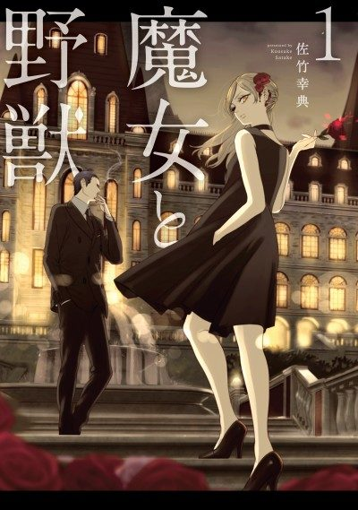

The Witch and the Beast
魔女と野獣
Guideau, a girl cursed by a witch, and Ashaf, a man with a coffin, travel to find the witch who cursed her.
After the anime, read the manga from Chapter 61.
7.3AniList score
—Animeter, no votes yet
12episodes
Rate it or report where you stopped
Anime finished. Where does the manga pick up?
Start at Chapter61
The final episode adapts Chapters 56-60. Continue reading from Chapter 61.
160ongoing
Season 1Start reading here